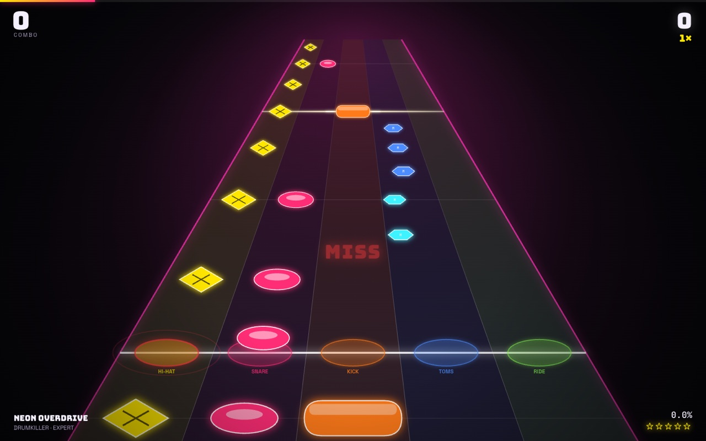
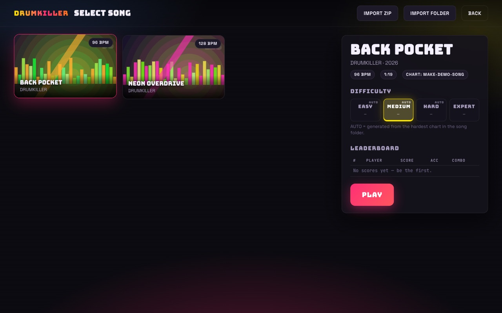
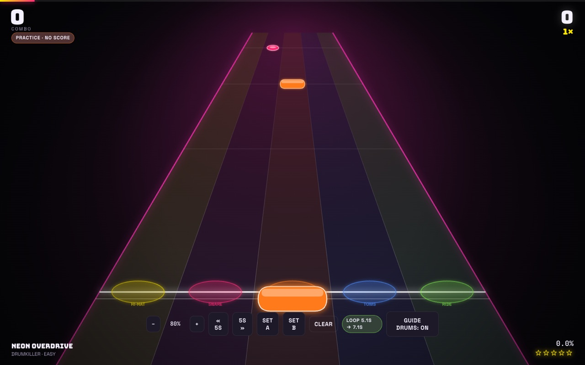
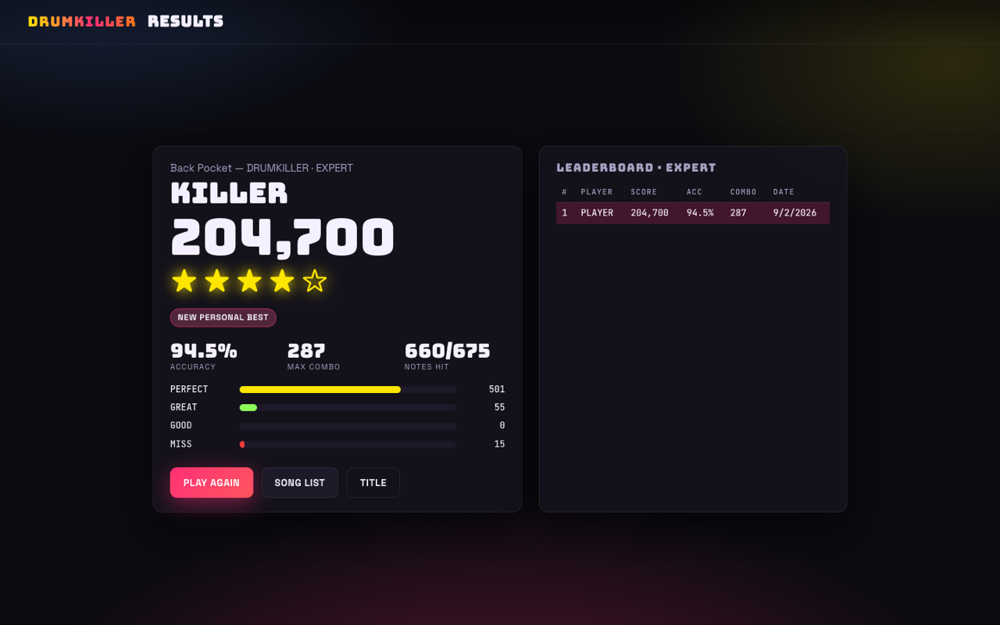
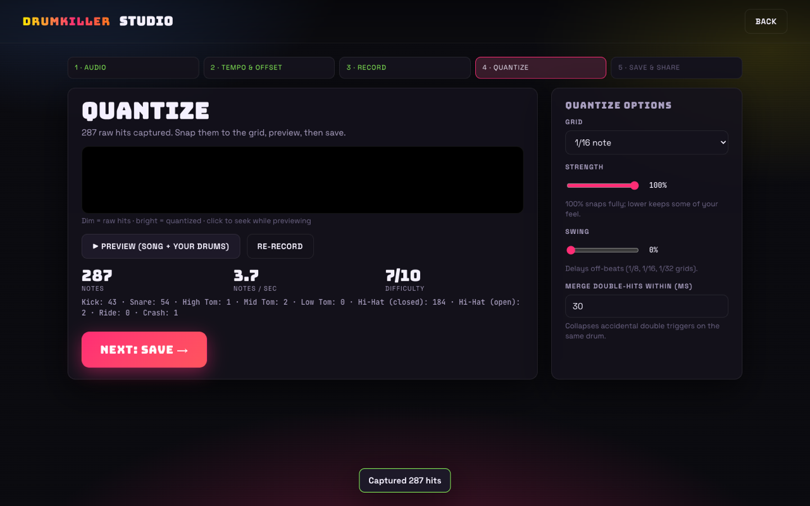
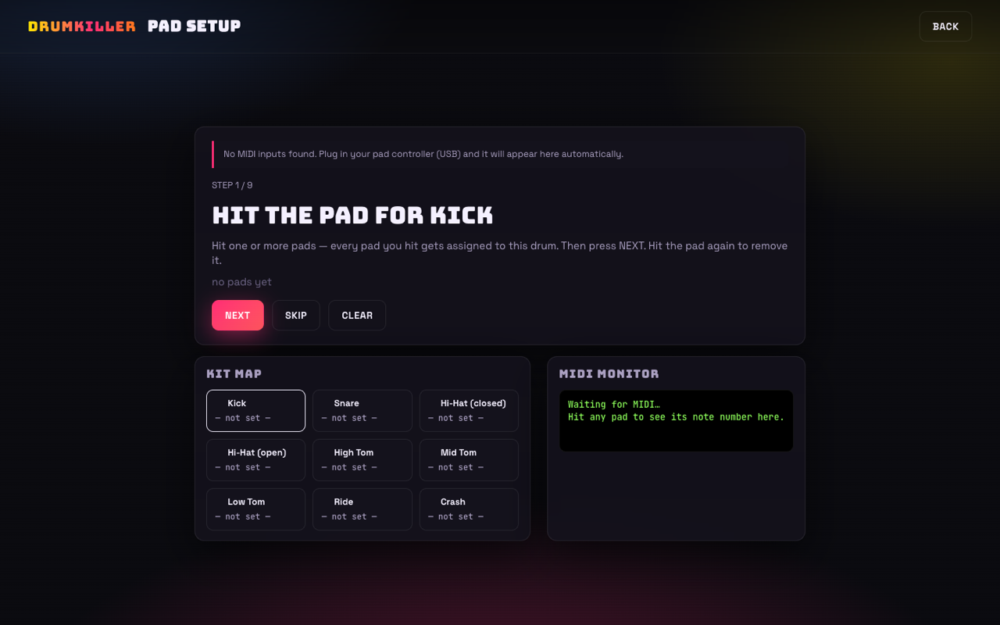

Guitar Hero for finger drumming. Plug in your MIDI pads, hit the notes as they fly down a neon highway, chase the high score, and turn your own grooves into shareable charts. Free, open source, runs in your browser.
Chrome or Edge recommended for MIDI. No pads handy? Play with D F Space G H K L A. Nothing to install, nothing leaves your browser.

Every drum gets its own track. Hi-hats show open and closed symbols, the three toms share one lane, and the crash slams across the whole highway.
Easy, medium, hard, expert. Chart only the expert part and the easier versions are generated with musical rules: ghost notes go first, hats thin out, fills collapse to their last hit.
Perfect / great / good windows, a 4× combo multiplier, overhit penalties, star ratings, full-combo badges and a local leaderboard for every song and difficulty.
Slow the song to 50%, loop a section with A/B points, seek around, and turn on guide drums to hear the part. Practice never touches your scores.
A punchy synthesized drum kit is built in, so there is nothing to download. Any song can ship its own samples per drum, or you can let your FGDP make the noise.
Hit the pad for kick, snare, toms, hats, ride, crash. Assign several pads to one drum. Saved per device, with presets for the FGDP-30/50 and generic 4×4 controllers.
A twelve-click test measures how late your hits land and dials in the offset automatically. Hit timing is stamped by the MIDI driver, not by the frame rate.
The whole thing is one static web app. Scores, settings and imported songs live in your browser.





The Studio turns a performance into a chart. No DAW required, but the output is standard MIDI if you want to polish it in one.
# a song is just a folder — zip it and share it my-song/ song.json # title, artist, bpm, offset, which files are which audio.mp3 # the mix without drums expert.mid # GM drum notes on channel 10 — easier charts auto-derive samples/kick.wav # optional per-drum sample overrides
Full format spec: SONG-FORMAT.md
Anything that sends MIDI note-on messages over USB. Web MIDI runs on macOS, Windows and Linux in Chrome, Edge, Opera and Firefox 108+.
Two original demo tracks are bundled. Bring your own after that.
▶ PLAY DRUMKILLER